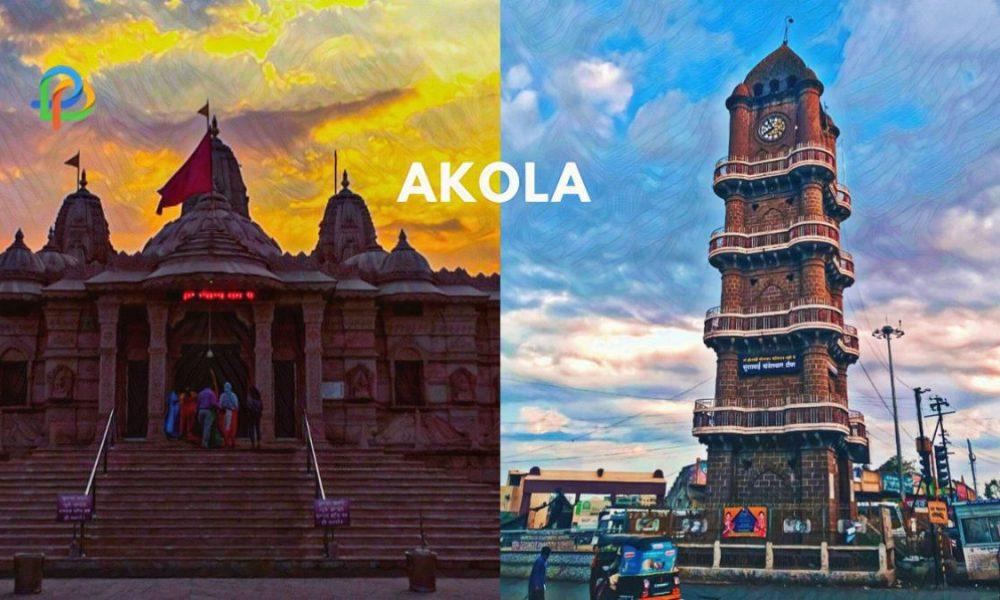
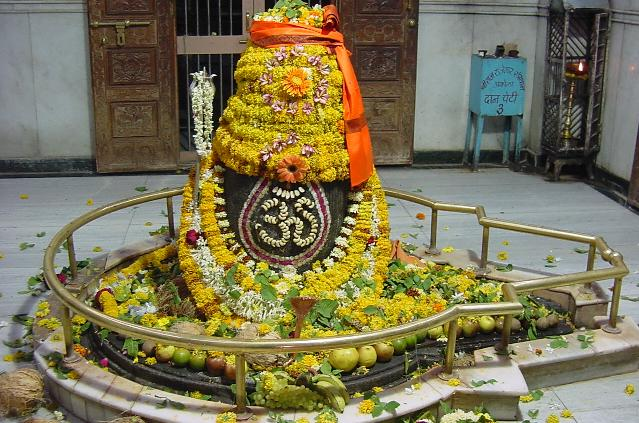
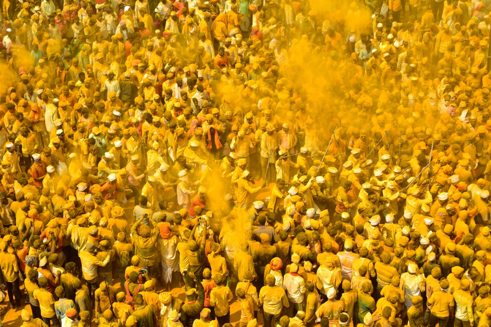
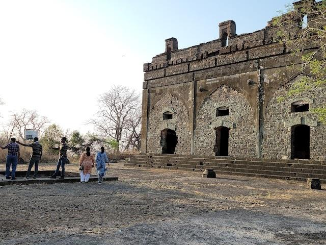
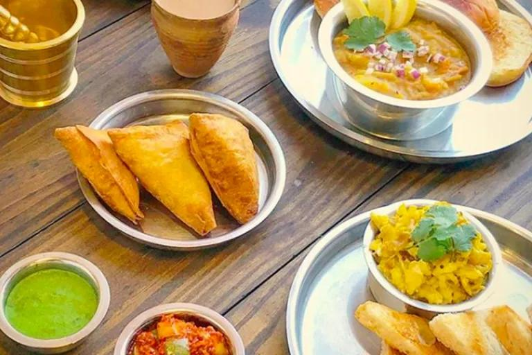
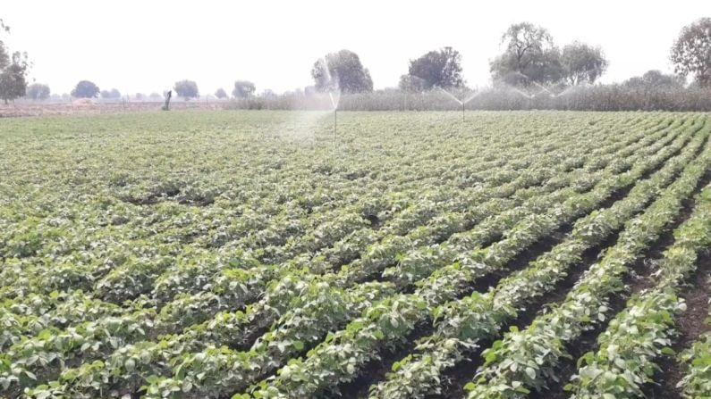
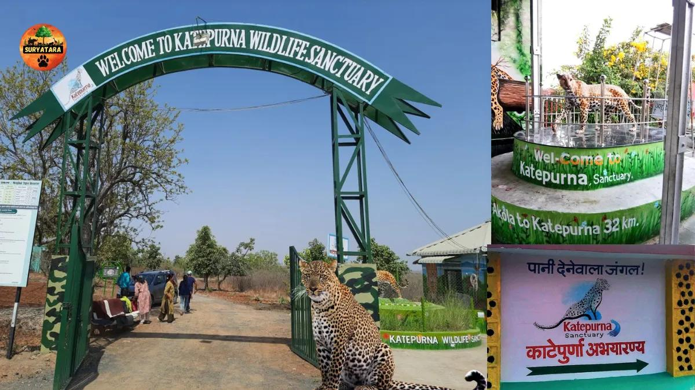
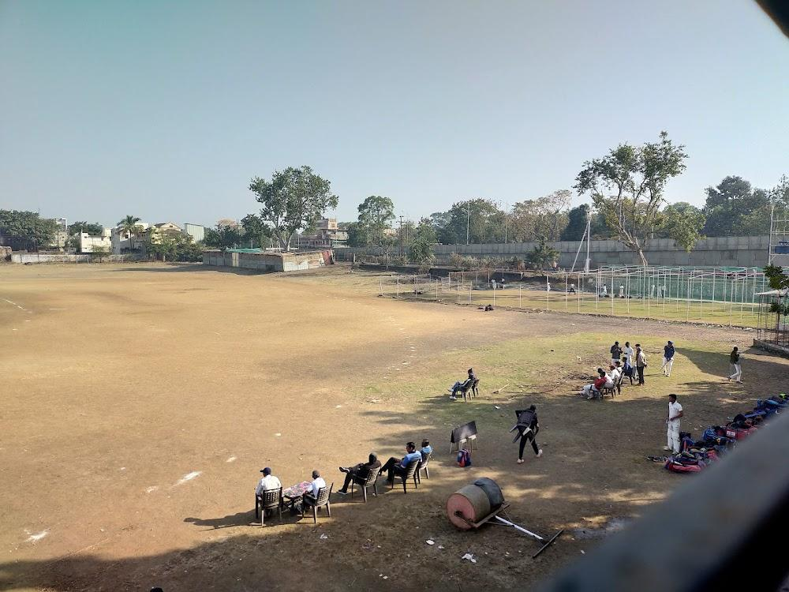

About

Akola is the third-largest city in the eastern region of Maharashtra. With a population of around 600,000, the city is a vibrant, expanding metropolis. It is highly regarded for its high literacy rate and acts as a central link bridging various cultures, trades, and transit routes across the state.
- Location:North-Central part of Maharashtra, India, along the banks of the Morna River.
- Famous as:The "Cotton City of India" due to its massive cotton trading and production.
History

The roots of the city stretch back to ancient kingdoms, later becoming a strategic military and administrative stronghold during the Maratha Empire. In 1697 CE, the territory was granted to a nobleman under Aurangzeb who constructed the Asadgad Fort. The region was eventually integrated into the Bombay state in the 20th century before officially joining Maharashtra.
- Akola boasts a rich historical legacy spanning centuries under major dynasties. It was ruled by the ancient Mauryan and Chalukya empires before becoming a major military stronghold during the Mughal era. This period featured the construction of the massive Asadgad Fort in the late 1600s. Control later passed into the hands of the brave Maratha Kingdom. The region then shifted to British East India Company rule in the 19th century. Under British administration, it developed into a premier global cotton trade commercial hub that expanded rapidly after the introduction of the railway network. Finally, Akola integrated officially into the state of Maharashtra in 1960.
Culture

The culture of Akola is deeply intertwined with Maratha traditions mixed with diverse historical Muslim influences. The city celebrates vibrant festivals like Ganesh Chaturthi, Diwali, and Makar Sankranti with immense community zeal. Locals are known to take immense pride in their traditional handloom textiles and terracotta crafts.
- Main Festivals:Ganesh Chaturthi, Diwali, and Makar Sankranti are celebrated with immense joy.
- Traditional Arts:Beautiful handloom cotton textiles, colorful terracotta pottery, and painted sculptures.
- Language:Marathi is the primary language, spoken locally in the sweet Varhadi dialect.
Tourism

Tourists are drawn to the region's fascinating blend of towering ancient monuments and wildlife sanctuaries. Major highlights include the historic Narnala Fort, Akola Fort, and the spiritual Raj Rajeshwar Temple. Nature enthusiasts frequently visit the Katepurna Wildlife Sanctuary, which is a prime spot for observing migratory birds.
- Akola Fort (Asadgad): Historic riverside fort with panoramic views.
- Shri Raj Rajeshwar Mandir: Revered 400-year-old Lord Shiva temple.
- Katepurna Wildlife Sanctuary: Nature reserve with deer, leopards, and birds
Famous Food

The local cuisine is heavily influenced by authentic Maharashtrian flavors and features a beautiful array of both savory and sweet items. Staples include Aamti, Thalipeeth, and various traditional dal and rice preparations. For those with a sweet tooth, local specialties like Basundi, Anarsa, and Shrikhand are must-try delicacies.
- Famous Food:Spicy and flavorful Misal Pav, Pav Bhaji, and multi-grain Thalipeeth served with fresh curd.
- Local Specialty:Crispy Anarsa (a sweet rice-and-jaggery festival treat) and authentic, rich Shrikhand.
Economy

Economically, Akola is universally recognized as the "Cotton City of India," housing massive cotton ginning, textile, and agricultural trade centers. Beyond textiles, it serves as a prominent national center for oil milling, soybean processing, and cottonseed industries. The city also generates considerable energy and activity through facilities like the Paras Thermal Power Station.
- Key Industries:Large-scale cotton ginning mills, vegetable oil processing plants, and the Paras Thermal Power Station.
- Main Crops:Premium quality cotton, soybeans, jowar, wheat, peanuts, and bananas.
Environment

The district's environment consists of low-lying plains along the Morna River surrounded by dense, rugged forest hills in the northern talukas. The nearby wildlife reserves harbor diverse flora and fauna, functioning as essential green lungs for the district. The region enjoys gorgeous, clear winters, which bring in migratory bird populations.
- Climate:Tropical and hot, with intense summers, wet monsoons, and mild, pleasant winters.
- Key Rivers:The Morna River flows directly through the city, which sits in the larger Tapti River valley.
- Protected Areas:Katepurna Wildlife Sanctuary and the nearby sprawling Melghat Tiger Reserve.
Sports

Sports and outdoor activities are an active part of community life, with locals utilizing the city's parks, such as Nehru Park, for regular fitness. The nearby hilly areas, especially around the Narnala Fort region, are also popular destinations for adventure enthusiasts who enjoy trekking and hiking.
- Traditional Sports:Popular local games like Kabaddi and Kho-Kho played in school and college tournaments.
- Focus:Manufacturing premium Carrom boards for the national market and boosting youth athletics at the Akola Sports Complex.